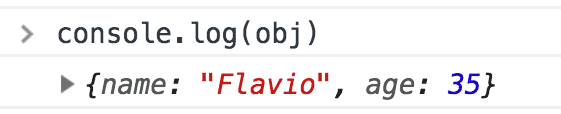
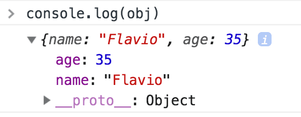

node.js 入门教程之十三 -- environment，error handler 和 log object
environment 运行环境
production environment 产品环境和 development environment 开发环境可以设置不同的配置。
node.js 默认为 development env 开发环境。通过设置环境变量：NODE_ENV=production 可以告诉 node.js 当前为产品环境。Linux 中可以通过如下指令修改：
export NODE_ENV=production
这样在当前 shell 中就会以 production 模式运行 node 程序，如果要永久修改此环境变量可以将命令写入 ~/.bashrc 文件。
也可以在运行 node 程序时定义 NODE_ENV：
NODE_ENV=production node app.js
设置 NODE_ENV 为 production 有如下优势：
- 日志记录保持在最小 level
- 更多的 caching 缓存级别来提高运行效率
可以通过状态判读符来判断当前运行环境，执行不同指令：
if (process.env.NODE_ENV === 'development') {
console.log('running on development environment')
}
if (process.env.NODE_ENV === 'production') {
console.log('running on production environment')
}
if (['production', 'staging'].indexOf(process.env.NODE_ENV) != -1) {
console.log('running on production environment')
} else {
console.log('running on development environment')
}上面第三个指令通过调用 array 的 indexOf 来获取某个字符串在数组中的索引号，如果不存在这个字符串则返回 -1。注意使用类型判断符=== 是为了保证类型和数值都匹配。
error handling 错误处理
node.js 中通过 exceptions 来处理 error 情况。
可以通过 throw 创建一个 exception：
const test = 123;
throw test;当 JavaScript 执行到上面的 throw 时程序会立刻停止，然后控制权会交给最近的 exception handler 例外控制器。
JavaScript 中 test 可以是任意的字符串，数字或者 object。但在 node.js 中只用来 throw Error objects。
一个 error object 可以是 Error 的实例或者是 Error class 的 child class 的实例：
throw new Error('error')
class childError extends Error {
}
throw new childError('error')下面介绍几种 exception handler 处理器。
第一种是通过 try/catch 声明来处理，在 try 中定义任意 exception 以及对应的 catch 块来响应：
try {
const a = 1;
if (a == 0) {
throw 'abc'
} else {
throw 123
}
} catch (e) {
console.log(e)
}catch 的参数 e 就是对应 throw 的数据。
如果在程序执行中，如果某个 throw 的 exception 没有被 catch，程序就会立刻 crash。可以通过监听 process 的 uncaughtException event 事件来解决这个问题：
process.on('uncaughtException', err => {
console.log('there was a uncaught error: ', err.message)
process.exit(1)
})
throw new Error('error')第二种是 promise 中的 error handler。
使用 promise 可以将多个操作过程组合成链，在链的最后处理 error 情况，下面是一个简单示例：
let a = 0;
let b = 0;
const doSomething1 = new Promise((resolve, reject) => {
if (a == 0)
resolve('resolve 1')
else
reject('reject 1')
})
const doSomething2 = (data) => {
return new Promise((resolve, reject) => {
if (b == 0)
resolve(data + ' : resolve 2')
else
reject('reject 2')
})
}
doSomething1
.then(doSomething2)
.then(res => console.log(res))
.catch(rej => console.log(rej))当 doSomething1 为 resolve 时会执行 doSomething2()，为 reject 时会直接进入 catch 块。同样的 doSomething2 返回的 promise 为 reject 时也会进入 catch 块。此时通过输出的信息可以知道是在哪一个 promise 链响应了 exception。
第三种是 async/await 的 error handling。
使用 async/await 也是通过 try/catch 来处理 exception 情况的：
let a = 1;
const demo = new Promise((resolve, reject) => {
if (a == 0) {
setTimeout(resolve, 1000, 'resolve');
} else {
reject('reject')
}
})
const test = async() => {
try {
const data = await demo
console.log(data)
} catch (error) {
console.log(error)
}
}
test()
//output:
//reject当 demo promise 为 reject 时会响应 test() 中的 catch 块。
日志输出 object
当我们在浏览器中使用 console.log() 输出某个 object 时，会得到一个很好的效果：

点击箭头可以展开日志，完整地展示 object 的 properties：

在 node.js 中和浏览器有所不同，它是将 object 的内容以字符串的形式输出到终端或者日志文件中。
对于简单的 object 来说没有什么问题，但是对于包含超过 2 层嵌套以上的 object 来说 node.js 就会放弃输出所有内容而用一个 [Object] 占位符表示剩余内容：
const obj = {
name: 'joe',
age: 35,
person1: {
name: 'Tony',
age: 50,
person2: {
name: 'Albert',
age: 21,
person3: {
name: 'Peter',
age: 23
}
}
}
}
console.log(obj)输出结果为：
{
name: 'joe',
age: 35,
person1: {
name: 'Tony',
age: 50,
person2: { name: 'Albert', age: 21, person3: [Object] }
}
}可以看到第三层的内容已经用 [Object] 取代。
强制要求输出 object 所有内容的最好的方法就是使用 JSON.stringify()：
console.log(JSON.stringify(obj, undefined, 2))输出如下：
{
"name": "joe",
"age": 35,
"person1": {
"name": "Tony",
"age": 50,
"person2": {
"name": "Albert",
"age": 21,
"person3": {
"name": "Peter",
"age": 23
}
}
}
}第一个参数定义需要输出的 object，第二个参数是定义一个 function 用来转换字符串内容也可以不定义，第三个是定义缩进量。